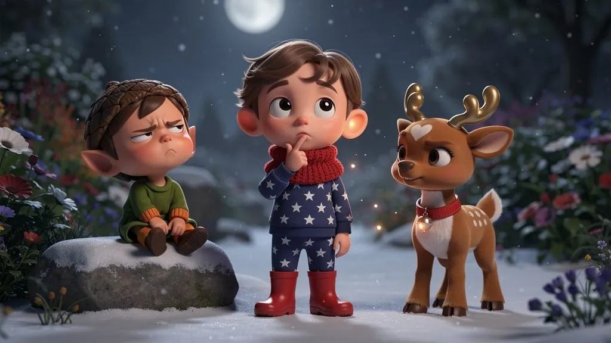
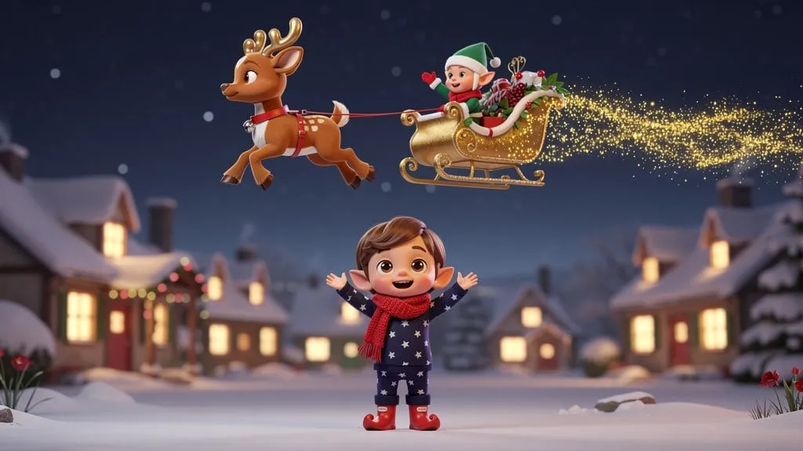

J'ai envoyé
UNE photo…

Léo, 5 ans

Le hoquet doré de la nuit de Noël
…et voilà SON livre
La veille de Noël, Léo ne dort pas…
Il sauve le renne de Noël

Et donne le départ du traîneau !
Son prénom.
Son visage.
Son histoire.
Lu gratuitement avant d'acheter
encoreunehistoire.fr